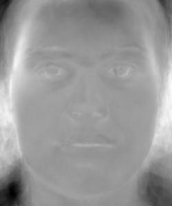
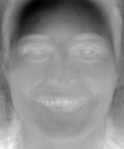

Face Morphing and Modelling a Photo Collection
By Alec Thompson
Overview
Defining Correspondences
I developed an interactive tool in python that allowed me to select corresponding points on two images.
I used it to select corresponding points (eyes, nose, chin, forehead) on my images of Bradley Cooper and Emma Watson.
The corners of each image were also selected, so that every pixel is within a triangle.
Then, I computed the mean point set of the two images, and built a Delaunay triangulation of the mean points.
|
|
| Bradley Cooper with keypoints and triangulation |
Emma Watson with keypoints and triangulation |
Computing the "Mid-way Face"
Given the mean point set of the two images, I computed the affine transformation matrix to warp the
each triangle in the triangulation from the original images into this new shape. I used an inverse-warp and used a nearest neighbor
algorithm to interpolate pixel values.
After I warped both images into the mean face shape, I ran a cross-dissolve to average the pixel values.
|
|
|
| Bradley Cooper |
Morphed Image (Brama Cooson) |
Emma Watson |
The Morph Sequence
Using my existing algorithm, I used a range of weights from 0 to 1 for the shape configuration and the cross-dissolve.
I saved these images and put them together into a GIF, for your viewing pleasure!
 |
| Bradley Cooper to Emma Watson |
The "Mean Face" of a population
I used spatially normalized images and their corresponding points from the FEI Face Database, which contains 400 images.
I morphed each of the images into the average face shape, and then averaged the pixel values to get the mean face shape.
 |
 |
 |
|
|
 |
| Original Image 1 |
Original Image 2 |
Original Image 3 |
Original Image 4 |
Original Image 5 |
Original Image 6 |
|
|
|
|
|
|
| Warped Image 1 |
Warped Image 2 |
Warped Image 3 |
Warped Image 4 |
Warped Image 5 |
Warped Image 6 |
Then, I warped my face to the average geometry, and the mean face onto my face's geometry.
|
|
|
| Mean neutral face of the population |
Mean smiling face of the population |
My face |
|
|
| My face warped to the average neutral geometry |
Mean neutral face warped onto my face's geometry |
Caricatures: Extrapolating from the mean
I created a caricature of myself by using a warp fraction outside of the normal range of 0 to 1.
A negative warp fraction exaggerates my facial features, while a positive warp fraction larger than 1
exaggerates the mean face features. The formula I used to compute the caricatured warp shape is
(1-warp_frac) * my_face_points + warp_frac * mean_face_points.
|
 |
| Warp_frac = -2 |
Warp_frac = 2 |
Principal Component Analysis
I represented the images in the database as vectors of pixels, and then I performed principal component analysis
on the vectors to find the eigenvectors with the largest singular values. I converted the eigenvectors back into images
(eigenfaces), and plotted the results below.
|
|
|
|
| Neutral Eigenface 1 |
Neutral Eigenface 2 |
Neutral Eigenface 3 |
Neutral Eigenface 4 |
|  |
|
|
|
| Neutral Eigenface 5 |
Neutral Eigenface 6 |
Neutral Eigenface 7 |
Neutral Eigenface 8 |
|
|
|
|
| Neutral Eigenface 9 |
Neutral Eigenface 10 |
Neutral Eigenface 11 |
Neutral Eigenface 12 |
|
|
|
|
| Neutral Eigenface 13 |
Neutral Eigenface 14 |
Neutral Eigenface 15 |
Neutral Eigenface 16 |
|
 |
|
|
| Smiling Eigenface 1 |
Smiling Eigenface 2 |
Smiling Eigenface 3 |
Smiling Eigenface 4 |
 |
|
|
|
| Smiling Eigenface 5 |
Smiling Eigenface 6 |
Smiling Eigenface 7 |
Smiling Eigenface 8 |
|
|
|
|
| Smiling Eigenface 9 |
Smiling Eigenface 10 |
Smiling Eigenface 11 |
Smiling Eigenface 12 |
|
|
 |
|
| Smiling Eigenface 13 |
Smiling Eigenface 14 |
Smiling Eigenface 15 |
Smiling Eigenface 16 |
I chose random weights to multiply each eigenface by, and then added the weighted vectors together to generate a random face.
|
|
| Random Neutral Face 1 |
Random Neutral Face 2 |
|
|
| Random Smiling Face 1 |
Random Smiling Face 2 |